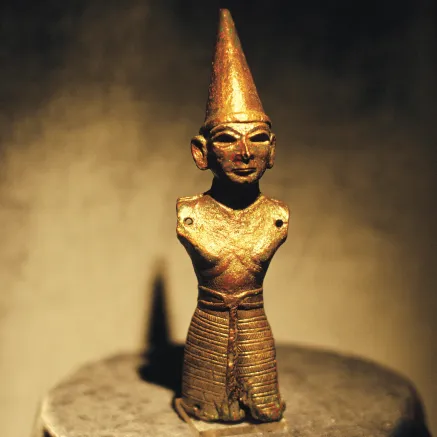

Teşup
Fırtına Tanrısı Teşup Heykelciği Müzenin arkeoloji bölünün Orta ve Geç Tunç Çağı vitrinlerinin arasında kendisine özel yapılmış bir vitrin içerisinde sergilenmektedir. “Bin Tanrılı Halk” Hititlerin tanrılar panteonun/topluluğunun Baş tanrısı Fırtına Tanrısı Teşup’un bronz heykelciğidir. Teşup Heykeli, 1962 yılında Doğantepe Köyü Mesken Höyük'te yüzeyden 4 m derinlikte bulunmuştur. Doğantepe Köyü’nün bulunduğu alan Geç Neolitik-Erken Kalkolilitik Çağ’dan başlayıp Osmanlı Dönemi’nin sonuna kadar yerleşim görmüş bir höyüktür. Arkeoloji literatürüne Amasya Heykelciği veya Hitit Fırtına Tanrısı Teşup heykeli olarak tanınan eser; Hititlerin Yukarı Ülkesindeki Hakmiş/Doğantepe’deki kült yerine tapınma için getirilmiş olabileceği gibi buradaki tapınağa ait bir heykel de olabilir. Bugünkü Doğantepe köyü Antik Hitit Kenti Hakmiş üzerine kurulmuştur. Hititlerin başkenti Boğazköy’e yaklaşık 150 km mesafede bulunan Doğantepe, Hitit İmparatorluk Dönemi'nde Kaşka'ların hücumuna uğramış bir kültür merkezi olup Hitit Kralları tarafından öncü bir kale olarak kullanılmıştır. Tunç madeninden döküm tekniğinde yapılmış olan eserin yüksekliği 21.5 cm, ağırlığı ise 1340 gr’dır. Eserin kol ve bacak kısımları ise bulunamamıştır. Heykelin etek kısmından aşağısı yoktur. Başında tanrısal konik sivri külahlı başlık vardır. Dudakları hafif tebessüm eder şekilde, kalın kaşlı, badem gözlü ve göz çukurları boştur. Eserin orjinalinde göz çukurunun lapis lazuli gibi kıymetli taşlarla dolu olduğu düşünülmektedir. Düzgün hafif tebessüm eden, güçlü ve mağrur yüz ifadesi ve narin beden yapısı ile genç erkek olarak tasvir edilmiştir.